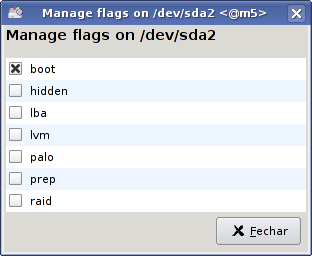

|
[25/09]
:. Resumo do dia [25/09] :. Atom CE4100: trazendo Flash, 3D e widgets para as TVs [25/09] :. UEFI da Phoenix carrega o sistema em menos de um segundo [25/09] :. Intel demonstra o poder de fogo de seu GPU Larrabee [25/09] :. Google cria plugin para deixar o IE melhor; MS não gosta [25/09] :. Octane III: Supercomputador pessoal de $8000 da SGI [25/09] :. Novidades do Gnome 2.28 [24/09] :. Resumo do dia [24/09] :. Light Peak da Intel: transferências de 10 Gbps via cabos [24/09] :. Intel anuncia oficialmente três Core i7 para portáteis [24/09] :. Oficial: placa-mãe da MSI terá chip Lucid Hydra integrado [23/09] :. Novidades do Google SketchUp 7.1 [23/09] :. Transporte público do Rio de Janeiro no Google Maps [23/09] :. Resumo do dia [23/09] :. Mais informações sobre o Courier, o tablet da Microsoft :. Mais noticias » |
Este é um texto antigo, que está
desatualizado e continua disponível apenas para referências histórias.
Você pode ler informações mais atualizadas sobre o tema no: Instalando o Ubuntu em pendrives Importante: Esta dica mostra os passos
manuais da instalação. Nas versões recentes do Ubuntu você pode fazer a
instalação de maneira muito mais simples usando o usb-creator, como descrito aqui. Em 2005 publiquei um tutorial de como instalar o Kurumin em um pendrive, ainda na época em que os pendrives eram novidade. Hoje vamos aprender como fazer o mesmo utilizando o Ubuntu ou Kubuntu. Assim como em outras distribuições live-CD, o Ubuntu/Kubuntu é armazenado no CD na forma de uma imagem comprimida, usando o SquashFS. Ele oferece um nível de compressão similar a outros algoritmos de compressão, como o zip e o rar, mas oferece a vantagem de permitir que o sistema rode diretamente a partir da imagem compactada. Com isso, temos quase 2 GB de softwares armazenados em um CD-ROM de apenas 700 MB. Quando o sistema é instalado, esta imagem é descomprimida, fazendo com que o sistema ocupe cerca de 2 GB no HD. Se fizéssemos uma instalação normal do sistema, ele ocuparia todo o espaço de um pendrive de 2 GB, não deixando nada para armazenar arquivos e programas adicionais. Nessa receita, continuaremos a utilizar a imagem compactada do sistema, de forma que a instalação ocupará apenas 650 MB do espaço do pendrive e o restante ficará disponível para guardar arquivos e programas adicionais. É possível inclusive instalar em um pendrive de apenas 1 GB. A partir do Ubuntu/Kubuntu 6.10 foi introduzido o persistent mode, que permite utilizar uma segunda partição no pendrive para armazenar as alterações. Durante o boot, a partição é montada em conjunto com a imagem compactada utilizando o UnionFS, onde a imagem do sistema é montada em modo somente leitura e a partição em modo de leitura e escrita. Todas as alterações feitas no sistema são armazenadas na partição e restauradas nos boots subsequentes, de forma que o sistema se comporta de forma muito similar a se estivesse instalado. A principal vantagem é que o sistema ocupara muito menos espaço. O Ubuntu/Kubuntu 7.04 possui um bug nos scripts de inicialização que faz com que o persistent mode não funcione, por isso é recomendável utilizar o 7.10 (ou mais recente) ou então o antigo 6.10. O primeiro passo é ter em mãos um CD de instalação da versão do Ubuntu/Kubuntu que você quer instalar no pendrive ou o arquivo .ISO referente ele. Você pode fazer a instalação tanto através de uma distribuição Linux instalada no HD (não precisa sequer ser o Ubuntu/Kubuntu) quanto dando boot através do CD-ROM gravado.
Preparando o pendriveO primeiro passo é formatar o pendrive, criando duas partições. A primeira será uma partição FAT32, onde será armazenada a imagem do sistema e a segunda será a partição do persistent mode, onde serão salvas as alterações. A partição FAT32 conterá uma cópia completa do CD de instalação, de forma que ela deve ter 750 MB (para deixar algum espaço vago para caso precise incluir arquivos adicionais). A segunda partição, por sua vez, pode englobar todo o restante do espaço vago do pendrive. Um pendrive de 2 GB, ficaria assim:
sdd1: 750 MB (FAT)
Uma pegadinha é que o BIOS só aceita inicializar através do pendrive se você ativar a flag "bootable" para a partição (do pendrive) onde salvou a imagem do sistema. Sem isso, o boot para uma uma mensagem reclamando de que o dispositivo não é bootável. Para fazer isso através do gparted, clique com o botão direito sobre a partição FAT e acesse a opção "Manage Flags". No menu, marque a opção "boot":  Ao usar o cfdisk, selecione a partição e ative a opção "[Bootable]". O próximo passo é formatar as partições criadas. Preste muita atenção ao indicar as partições referentes ao pendrive para não formatar sua partição de trabalho por engano: # mkfs.vfat -F 32 /dev/sdd1 # mkfs.ext2 -b 4096 -L casper-rw /dev/sdd2 O parâmetro "-F 32" faz com que a primeira partição seja formatada em FAT32 (o padrão do mkfs.vfat é usar FAT16) e o "-L casper-rw" define o nome da segunda partição. É necessário que a partição se chame "casper-rw" para que ela seja usada para salvar as alterações, de forma que se você não usar a opção ao formatar, o persistent mode simplesmente não funciona. O segundo passo é montar a partição do pendrive e o CD-ROM com o sistema para poder copiar os arquivos. É necessário montar o CD-ROM mesmo ao dar boot através dele. # mkdir /mnt/pendrive /mnt/cd # mount /dev/sdd1 /mnt/pendrive # mount /dev/cdrom /mnt/cd Se você quiser fazer a cópia a partir de um arquivo ISO, pode montá-lo usando o comando "mount -o loop", que faz com que ele seja acessado como se fosse um CD-ROM gravado, como em:
Comece copiando todo o conteúdo do CD para a partição do pendrive, usando o "cp -a" (o parâmetro "-a" faz com que sejam copiados todos os arquivos e subdiretórios e todas as permissões sejam mantidas).
Em seguida é preciso copiar alguns arquivos específicos para o diretório raiz da partição, de forma que eles possam ser usados pelo syslinux: # cp -a /mnt/cd/isolinux/* /mnt/pendrive/ # cp -a /mnt/cd/casper/vmlinuz /mnt/pendrive/ # cp -a /mnt/cd/casper/initrd.gz /mnt/pendrive/ # cp -a /mnt/cd/install/mt86plus /mnt/pendrive/ # cp -a /mnt/cd/.disk /mnt/pendrive/ Precisamos agora criar o arquivo "syslinux.cfg" no diretório raiz da partição. Nele vai a configuração do gerenciador de boot:
ou
O conteúdo do arquivo fica:
DEFAULT persistent LABEL persistent LABEL live DISPLAY isolinux.txt
DEFAULT persistent LABEL persistent LABEL live DISPLAY isolinux.txt É importante enfatizar que, apesar de longa, a opção "append" forma uma única linha, do "append" ao "--". Na verdade, a única diferença entre os dois é a opção "pressed", que no Ubuntu é "preseed/file=preseed/ubuntu.seed" e no Kubuntu é "preseed/file=preseed/kubuntu.seed", no resto os dois arquivos são idênticos. O arquivo é composto de duas opções. A opção "persistent" contém o parâmetro "persistent" que faz com que o sistema utilize automaticamente a segunda partição para armazenar as alterações, enquanto a opção "live" faz com que o sistema rode em modo live-CD, sem salvar as alterações. A opção "DEFAULT" diz qual das duas vai ser o padrão. No meu caso, deixei a opção "persistent" como default, de forma que a segunda partição é usada automaticamente e você precisa digitar "live" na linha de boot para que o sistema use o modo live-CD. Como estamos utilizando o syslinux como gerenciador de boot, no lugar do isolinux, usado no CD, não é possível ajustar a linguagem e o layout do teclado pressionando a tecla F2, como ao dar boot pelo CD, por isso é necessário passar as opções através do arquivo de configuração, por isso incluí as opções "locale=pt_BR bootkbd=qwerty/br-abnt2 console-setup/layoutcode=br console-setup/variantcode=nodeadkeys" no arquivo. Se você quiser que o sistema inicialize no modo padrão, em inglês, basta retirá-las. No Kubuntu é necessário instalar o pacote "kde-i18n-ptbr" e alterar o idioma através do centro de controle para que o sistema fique em Português. Como estamos usando o pendrive em modo persistent, isso não é um grande problema, já que basta instalar uma vez para que a configuração torne-se permanente. Com isso estamos quase lá. Falta apenas instalar o syslinux para que o pendrive torne-se bootável. Para isso, é necessário antes de mais nada desmontar a partição:
O syslinux não vem instalado na maioria das distribuições, por isso é necessário instalá-lo usando o gerenciador de pacotes. No Ubuntu/Kubuntu ou qualquer distribuição derivada do Debian, instale os pacotes "syslinux" e "mtools" via apt-get:
Falta agora apenas rodar o comando do syslinux:
Ao contrário que faríamos ao gravar o lilo num HD por exemplo, o comando deve indicar a partição criada (/dev/sda1) e não o dispositivo. Concluindo, use o comando abaixo do lilo (o pacote "lilo" deve estar instalado). Ele corrige o setor de boot caso necessário, de forma a remover resquícios de instalações de outros gerenciadores de boot e a corrigir problemas diversos:
Com isto, você já tem um pendrive bootável, basta configurar o setup para inicializar através dele e testar.
Se o boot for iniciado de forma normal, mas o sistema parar em um certo ponto, mostrando apenas um cursor piscante no topo da tela, indefinidamente, verifique se a pasta ".disk" do CD foi realmente copiada para o pendrive. Por algum motivo, sem ela o sistema simplesmente não conclui o boot. Quando falo em "pendrive" estou na verdade me referindo a qualquer dispositivo de armazenamento USB compatível com o padrão usb-storage. O mesmo pode ser feito com HDs externos, ligados na porta USB (os HDs são até menos problemáticos do que os pendrives), câmeras (onde o cartão é acessado como uma unidade de armazenamento) e até mesmo cartões SD ou Memory Stick ligados a um leitor de cartões USB. Concluindo, aqui vai um pequeno script que automatiza o procedimento que vimos. Ele pode ser usado depois que o pendrive já está particionado e o CD-ROM ou arquivo .iso já está montado na pasta e o syslinux já está instalado.
# Script para instalar o Ubuntu/Kubuntu em um pendrive # Device do Pendrive # Pasta onde o CD-ROM ou o arquivo .ISO está montado # O editor que será usado para editar o arquivo sudo mkfs.vfat -F 32 "$pendrive"1 mkdir /mnt/pendrive cp -a $cd/* /mnt/pendrive/ $editor /mnt/pendrive/syslinux.cfg syslinux -f "$pendrive"1
|
|||||